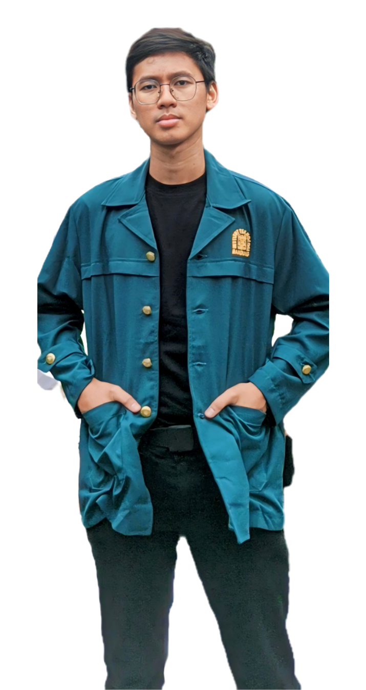

01
Subsurface &
Reservoir
Understanding reservoir behavior, fluid properties, and pressure response.
Petroleum Engineering · ITB
Hello, I'm
Engineering energy.
Advancing possibilities.
I explore the intersection of petroleum engineering, energy systems, and sustainability — connecting technical curiosity with research and meaningful collaboration.
A little introduction
An engineering student with a wider lens — interested in understanding complex systems, asking better questions, and creating value with others.

WHO I AM
I'm interested in how engineering can help us understand and improve the way energy is produced and used. My academic interests span reservoir and production engineering, formation evaluation, and emerging energy solutions.
Beyond technical work, student organizations and collaborative initiatives have shaped how I approach challenges: with curiosity, clear communication, and respect for the people behind every process.
What keeps me curious
A growing set of interests across subsurface engineering, energy systems, and collaborative problem-solving.
Understanding reservoir behavior, fluid properties, and pressure response.
Exploring well performance, production systems, and formation evaluation.
Investigating pathways for more efficient and responsible energy systems.
Bringing ideas to life through structured research and collective action.
Learning by doing
Experiences that continue to shape my perspective — through professional work, academic exploration, and meaningful collaboration with people and communities.
Professional & academic experience
Dampak Sosial Indonesia
Serving as an Associate Mentor in the BSI Scholarship Unggulan program, supporting its student mentoring activities.
Dampak Sosial Indonesia
Guided 18 high-achieving high-school students from underprivileged backgrounds in the BSI Scholarship Pelajar 2025 program.
Institut Teknologi Bandung
Pursuing a Bachelor of Engineering in Petroleum Engineering while building a foundation in reservoir, production, drilling, and formation evaluation.
Cagak Nagari
Founded and taught in a volunteer-led tutoring initiative that provided free learning support to help students improve their studies.
Leadership & community
HMTM “PATRA” ITB
Contributing to the organization's social and community affairs activities as part of the student staff team.
Kabinet KM ITB · Keresidenan Cirebon
Contributing to student engagement and community development within the Cirebon residency.
OSKM ITB 2026
Led public relations for the student orientation committee, working across communication and stakeholder-facing activities.
OSKM ITB 2026
Led the division connecting OSKM activities with communities and stakeholders beyond the campus environment.
Komisariat HMTM “PATRA” ITB
Acted as a liaison between the organization and external stakeholders, including partner institutions, alumni, and community organizations.
Aku Masuk ITB 2026
Led partnership and stakeholder engagement with media partners and sponsors for the Aku Masuk ITB 2026 initiative.
Selected works
A selection of research and engineering-oriented programming projects. Open each card to explore the context, key insights, and implementation.
Some entries are academic explorations or concept-stage work, not deployed field projects. Their scope is described in each detail panel.
Knowledge & practice
A snapshot of the subjects and working practices I continue to develop.
Get in touch
I'm always open to learning from new perspectives, discussing energy and engineering, or exploring meaningful collaborations.
Say hello